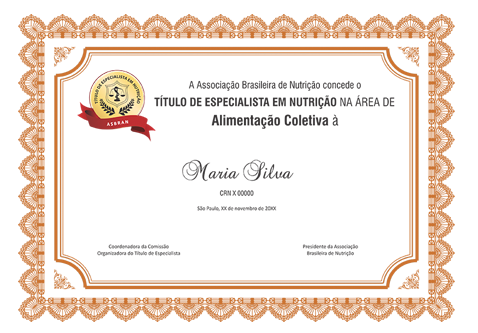

O Título de Especialista - TEN é o reconhecimento da capacitação técnica e científica, no desempenho das especialidades profissionais. Ele abrange 34 especialidades, conforme as Resoluções CFN nº 778 e nº 849. A edição atual de 2026 em andamento contempla as seguintes áreas: Nutrição Clínica em Gastroenterologia, Nutrição Clínica em Gerontologia, Nutrição Clínica em Nefrologia, Nutrição Clínica em Terapia Intensiva, Nutrição e Fitoterapia e Nutrição em Produção de Refeições Comerciais.
